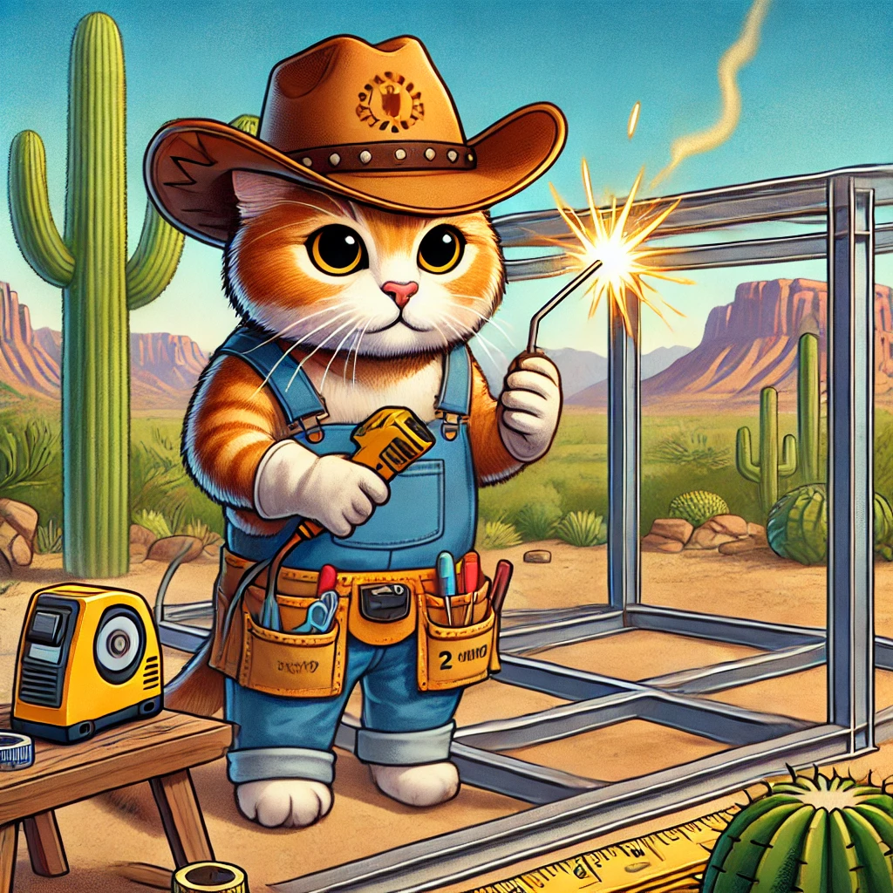

Welcome to the ultimate solution for keeping your cats safe and happy outdoors. Our premium catios are designed to provide a secure, predator-proof space for your feline friends.
Made with durable steel 1.5" square tubing, these catios are built to last and withstand any outdoor conditions. Whether you live in an urban area or the beautiful landscapes of Arizona, our catios blend seamlessly into any environment.
Choose from a range of sizes and customizable features to create the perfect outdoor haven for your cat. From lounging shelves to climbing platforms, each catio is designed to enrich your pet's life.
Give your cat the freedom they deserve with the peace of mind you need. Explore our options today and start building your dream catio!
